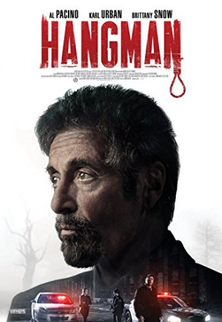

#8358 Hangman: The Killing Game
Alternativ: Hangman
 
 IMDB-Wertung: 5.2 / 10
IMDB-Wertung: 5.2 / 10  Metascore: 31
Metascore: 31 
Hangman, also die englischsprachige Version von Galgenmännchen, wird meist von Kindern gespielt. Ein Serienkiller hat sich das Spiel allerdings ebenfalls zur morbiden Grundlage seiner Morde genommen. Ein Polizist aus der Mordabteilung und ein kriminalistischer Profiler (Karl Urban und Al Pacino) bündeln daraufhin ihre Kräfte, um dem Täter das Handwerk zu legen.
Jahr: 2017
Dauer: 98 Minuten
FSK:
Land: USA Studio: Lionsgate Home EntertainmentTonspuren: DTS - ,
Untertitel: Deutsch,
Auflösung: 1080p (1920x804) Größe: 6860 MB
Genre: Thriller, Krimi, Mystery
Regisseur:  Johnny Martin
Johnny Martin
Drehbuch: Michael Caissie
Soundtrack: Frederik Wiedmann
Darsteller:
 Al Pacino als Detective Archer
Al Pacino als Detective Archer Karl Urban als Detective Ruiney
Karl Urban als Detective Ruiney Brittany Snow als Christi Davies
Brittany Snow als Christi Davies Sarah Shahi als Captain Lisa Watson
Sarah Shahi als Captain Lisa Watson Joe Anderson als Hangman
Joe Anderson als Hangman Michael Papajohn als Hangman's Father
Michael Papajohn als Hangman's Father- Chelle Ramos als Joey Truman
- Odessa Rae als Reporter
 Steve Coulter als Reverend Green
Steve Coulter als Reverend Green Michael Rose als Peter Rorick
Michael Rose als Peter Rorick- Jermaine Rivers als SWAT Leader
 Viviana Chavez als Female Desk Cop
Viviana Chavez als Female Desk Cop- Jules Haven als Reporter
 Dwayne Boyd als Police Diver #1
Dwayne Boyd als Police Diver #1 Matt Mercurio als Tactical Uniformed Officer
Matt Mercurio als Tactical Uniformed Officer- Sydney Shea Barker als Bar Patron
- Katelyn Farrugia als School Uniformed Officer
- Scott Parks als SWAT #1
- Sloane Warren als Dr. Abbey Westlin
 Timothy Carr als Hospital Patient
Timothy Carr als Hospital Patient Jon Arthur als Monroe Police Officer
Jon Arthur als Monroe Police Officer Ruben Vidal als Detective #3
Ruben Vidal als Detective #3- Garrick Parks als Eric Anderson
- Edgar Zanabria als Church Uniformed Officer
- Tony F. Charles als Uniformed Cop (uncredited)
- Martin Feigen als Police Officer
 Patti Schellhaas als Funeral Cryer
Patti Schellhaas als Funeral Cryer- John Gettier als Monroe Police Officer
- Stephanie Enderby als Jessica Ruiney
- Anna Elizabeth als Smoker
- Nathan Hamilton als Young Boy
- Kalae Chock als TV News Anchor
- Julian Jackson als Computer Tech 2
- D. Tobias Denney als Police Tech #138
- Kelly Maida als Detective
- Shirley Martin als Mrs. Martin
- Sonny Durham als Boy at Funeral
- Edward Martin Jr. als Mr. Martin
- Patrick Erickson als TV News Anchor
- Kyle David Browning als Gene Wilson
- Jenny Martin als News Reporter
- Chris Sepulveda als Large Dead Man (uncredited)
Datei: X:\2017(G-M)\Hangman The Killing Game (2017, FSK, 1920x804).mkv seit 28.02.2018
Festplatte: HD 2017(A-Z)-2018(A-F)
 Es gibt insgesamt 148 Filme in der Gruppe '2017(G-M)'
Es gibt insgesamt 148 Filme in der Gruppe '2017(G-M)'